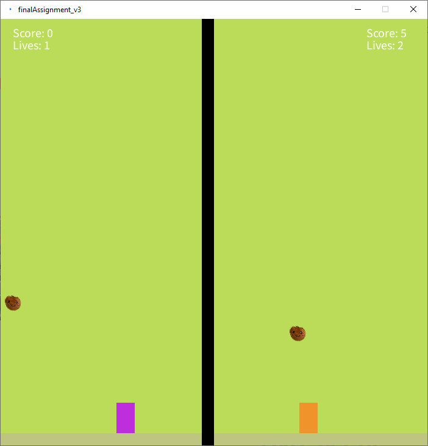

02
avorado
- programmer
- code/game design
- 2 days
Avorado was the final and biggest assignment during a one week long programming bootcamp. We had two days to make something in Processing, "that would make the teachers proud". Since studying game development, I chose to create a game.
The plan, while transforming the wireframes into a hi-fi prototype, was to use the company’s colours wisely, and to keep the simple and clean look. I chose to keep a white background and add colours to smaller, yet important buttons and other things. Only the search bar is green, indicating a visual hierarchy, besides, the map overview is blue, indicating that it might be something important for the user as well.
I have chosen to incorporate the lines’ colours in the screen of the line overview, making it easier for the user to differentiate between the lines based on the colours. By giving each line a respective border colour, I had the same idea in mind: portray a better and easier overview of the things, making things possibly easier to remember, while keeping a realatively clean and less overwhelming look.
Takeaways
tried myself in the role of a leader
organizational skills
insight and knowledge regarding prototyping
communicating and working in a team
familiarized myself with working with unity
On our meetings with the client, they were content and excited about the game, and it got positive feedback and was welcome by several people. I have participated as one of the representatives of the game at meetings with the client and other doctors/professionals. We got the opportunity to present our prototype and game idea at a Regional Meeting for doctors, in December 2021.